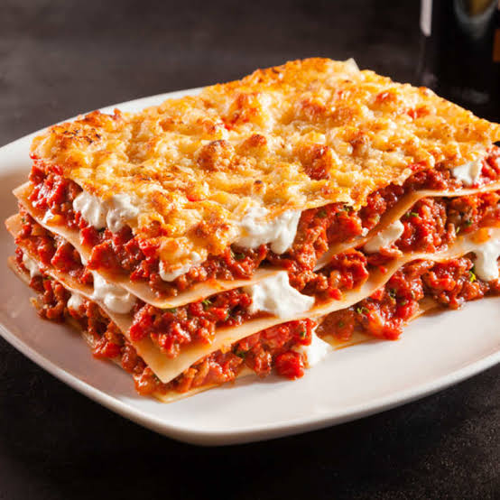

Easy Lasagna

Description
Many of us love Lasagna,yet most of us do
not know how to prepare it.
In few simple steps,
and with few ingredients we are going to learn
how to prepare this meal.☻
Ingredients
- 10 ounces lasagna noodles
- 1.5 pounds lean ground beef
- 3 cups cottage cheese
- 2 eggs
- 1 teenspoon garlic powder
- 2 tablespoons dried parsely
- salt and pepper to taste
- 1 (6 ounce) can tomato paste
- 2 (6.5 ounce) cans tomato sauce
Procedure
- Preheat oven to 375 degrees F(190 degrees C)
- Bring a large pot of lightly salted water to boil.
Add lasagna noodles and cook for 8-10 minutes or until al dente;drain
- In a skillet,brown ground beef.Using a fork,mix cottage cheese,
eggs,garlic powder,parsley,salt and pepper.
In a separate bowl combine tomato paste and tomato sauce
-
In a 9 x 13 inch baking pan, layer noodles, ground beef, tomato
sauce mixture and cottage cheese mixture.
Two layers of each will fit.
Cover with tin foil and bake for 30 minutes.
Remove tin foil the last 8 minutes of baking time
You can now serve your Lasagna